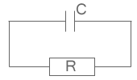
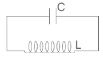
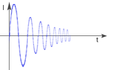
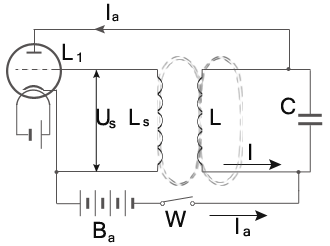
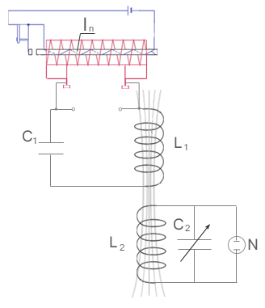
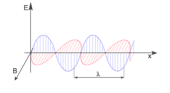
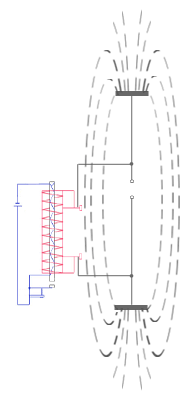
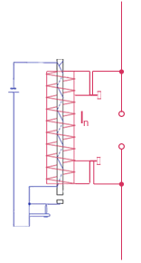

Drgania elektromagnetyczne
Rozważmy dwa obwody: RC i LC.
- Obwód RC bez źródła prądu przemiennego.
- Obwód LC bez źródła prądu przemiennego.

Jeśli okładki naładowanego kondensatora połączymy z przewodnikiem, to w obwodzie popłynie prąd związany z rozładowywaniem się kondensatora. Z upływem czasu napięcie między okładkami kondensatora maleje, więc maleje też natężenie płynącego prądu. Gdy kondensator się rozładuje, prąd przestaje płynąć.

Podobnie jak w poprzednim obwodzie płynie tu malejący prąd związany z rozładowywaniem się kondensatora. Malejący prąd, który płynie przez zwojnicę powoduje powstanie w niej zjawiska samoindukcji. W zwojnicy wytwarza się siła elektromotoryczna, która powoduje, że pomimo rozładowywania się kondensatora, prąd dalej płynie i powoduje ponowne ładowanie kondensatora.
|
Okres drgań elektromagnetycznych wynosi:
Wzory na wielkości w drganiach elektromagnetycznych są bardzo podobne do wzorów w drganiach mechanicznych. Wystarczy tylko odpowiednio zamienić wielkości.
| Drgania mechaniczne | Drgania elektromagnetyczne | |
| x (wychylenie) | odpowiada | Q (ładunek) |
| A (amplituda) | odpowiada | |
| V (prędkość) | odpowiada | I (natężenie) |
| a (przyspieszenie) | odpowiada | |
| m (masa) | odpowiada | L (indukcyjność) |
| k (współczynnik proporcjonalności) | odpowiada |
A więc wzory odpowiednio zmieniają się:
jest to wzór na energię pola magnetycznego zwojnicy.
Wytwarzanie drgań niegasnących
W rzeczywistości w obwodzie LC występuje również niewielki opór czynny R, który powoduje zamianę części energii elektrycznej na ciepło. Wskutek tego w takim obwodzie drgania elektromagnetyczne mają charakter drgań gasnących (zanikających). Oznacza to, że maksymalne natężenie prądu I płynącego w obwodzie maleje wraz z upływem czasu.

Aby pokryć straty energii oraz otrzymać drgania niezanikające w czasie, obwód należy dodatkowo zasilić. W najprostszym przypadku stosuje się do tego celu włączony równolegle w obwód induktor In, zasilany ogniwem lub akumulatorem.
W technice, drgania elektromagnetyczne niegasnące wytwarzane są za pomocą urządzeń zwanych generatorami drgań. Najprostszy, lampowy generator drgań składa się z triody L1, w której obwodzie anodowym znajduje się bateria Ba i obwód drgań LC.

Między siatkę a katodę triody jest włączona cewka Ls, umieszczona w pobliżu cewki L obwodu drgań. Po zamknięciu obwodu anodowego wyłącznikiem W, przez lampę płynie prąd ładujący kondensator C. Gdy napięcie na okładkach kondensatora osiągnie odpowiednią wartość, następuje jego rozładowanie przez cewkę L i w obwodzie LC powstają drgania elektromagnetyczne wielkiej częstotliwości. Związane z tymi drganiami szybkie zmiany pola magnetycznego wzbudzają w znajdującej się w nim cewce Ls siłę elektromotoryczną indukcji zmieniającą się w takt częstotliwości zmian natężenia I prądu płynącego w obwodzie LC. Występujące wskutek tego zmiany potencjału siatki Us, wywołują odpowiednie zmiany prądu anodowego Ia, zgodne w fazie ze zmianami prądu I w obwodzie LC. Prąd Ia doprowadzany do obwodu LC przekazuje mu w dodatnich półokresach prądu I część swej energii - doładowując kondensator, a tym samym podtrzymując wzbudzane w tym obwodzie drgania elektromagnetyczne. Po ustaleniu się równowagi energii dostarczanej i traconej amplitudy przepływającego w obwodzie LC prądu nie zmienia się i jego drgania stają się niegasnącymi.
Ponieważ praca lampy jest sterowana za pomocą obwodu drgań, sama zaś lampa podtrzymuje te drgania kosztem energii elektrycznej baterii - opisany generator lampowy nazywa się samowzbudnym.
Rezonans elektryczny
Opisane wyżej oddziaływanie cewki obwodu drgań wielkiej częstotliwości, polegające na wzbudzeniu w umieszczonej obok niej cewce siły elektromotorycznej indukcji, zmieniającej się z częstotliwością drgań obwodu LC nazywamy sprzężeniem indukcyjnym.
Rysunek przedstawia inny rodzaj takiego sprzężenia:

Obwód drgań o pojemności C1 i indukcyjności L1, zasilany przez generator drgań niegasnących wzbudza drgania elektromagnetyczne w drugim obwodzie L2C2, złożonym z cewki o indukcyjności L2 i z kondensatora o zmiennej pojemności C2 oraz lampki neonowej N spełniającej rolę wskaźnika napięcia. Zmieniający się z wielką częstotliwością strumień magnetyczny cewki L1, obwodu L1C1, zwanego obwodem wymuszającym, wzbudza w cewce L2 obwodu L2C2 prąd indukcyjny o takiej samej częstotliwości, czyli drgania elektryczne wymuszone, Amplituda tych drgań zależy od stosunku częstotliwości własnych obwodu L2C2 do częstotliwości drgań wymuszających obwodu L1C1 i osiąga maksymalną wartość wtedy, gdy częstotliwości te są sobie równie, czyli:
Opisane wyżej zjawisko nosi nazwę rezonansu elektrycznego, a częstotliwość, przy której zachodzi, nazywamy częstotliwością rezonansową.
Fale elektromagnetyczne
W 1865 roku Maxwell w swojej teorii elektromagnetyzmu przewidział dwa zjawiska, które nazywamy prawami Maxwella:
- I prawo Maxwella - Zmienne pole magnetyczne powoduje powstanie wirowego (i też zmiennego) pola elektrycznego.
- II prawo Maxwella - Zmienne pole elektryczne wytwarza wokół siebie wirowe (i też zmienne) pole magnetyczne.
Wystarczy w jakikolwiek sposób wytworzyć zmienne pole (np. magnetyczne) i to spowoduje rozchodzenie się pola elektrycznego i magnetycznego. Takie rozchodzące się pole elektromagnetyczne nazywamy falą elektromagnetyczną.
Prędkość V rozchodzenia się fali elektromagnetycznej w próżni jest równa prędkości światła w próżni.
Równość ta nasunęła Maxwellowi wniosek, iż światło jest jednym z rodzajów fal elektromagnetycznych.

Powyższy wykres przedstawia przestrzenny obraz rozkładu natężenia pola elektrycznego i indukcji pola magnetycznego - fali elektromagnetycznej rozchodzącej się w kierunku x. Wynika z niego, iż fala elektromagnetyczna jest falą poprzeczną, przy czym jej długość jest określona wzorem:
T - okres drgań źródła fali
Uwzględniając wzór na częstotliwość fali, otrzymujemy:
Wysyłanie i odbiór fal elektromagnetycznych
Teoria Maxwella została potwierdzona doświadczeniami Hertza. Wykorzystanie faktu, iż natężenie wirowego pola elektrycznego jest wprost proporcjonalne do szybkości zmian wywołującego je pola magnetycznego, doprowadziło go do wniosku, że do uzyskania fali elektromagnetycznej o dużych wartościach wektorów i

Następnie Hertz usunął w ogóle okładki kondensatora (zmniejszył przez to dodatkowo pojemność). W rezultacie otrzymał prostoliniowy przewodnik o określonej, choć bardzo niewielkiej indukcyjności i pojemności, zwany otwartym obwodem drgań.

Innym doświadczeniem, jakie wykonał Hertz było zastosowanie rezonansowego obwodu drgań w postaci kołowego przewodnika z iskiernikiem złożonym z dwóch kuleczek, którego częstotliwość drgań własnych powinna być taka sama, jak obwodu otwartego wysyłającego fale, tzn. dostrojona do źródła drgań. Rezonans powoduje, iż obwód ten zostaje pobudzony do drgań, a między kuleczkami powstaje iskrzenie.
Na podstawie tych dwóch doświadczeń Hertz odkrył następujące właściwości fal elektromagnetycznych:
- fale elektromagnetyczne nie przechodzą przez przewodniki, lecz zostają odbite od nich, zgodnie z prawem odbicia w ruchu falowym, przechodzą natomiast przez dielektryki, ulegając załamaniu zgodnie z prawami załamania
- fale padające i odbite interferują ze sobą wytwarzając fale stojące
- w próżni fale elektromagnetyczne rozchodzą się prostoliniowo
- prędkość rozchodzenia się fal elektromagnetycznych w próżni równa jest 300 000 km/s, a więc równa jest prędkości rozchodzenia się światła c.
Fale elektromagnetyczne mają szerokie zastosowanie w radiotelegrafii, radiofonii, telewizji i radarze, elektromedycynie, łączności satelitarnej, itp.
Radiofonią nazywamy przesyłanie na odległość dźwięku za pomocą fal elektromagnetycznych. Radiofoniczna stacja nadawcza składa się z włączonego do anteny generatora wielkiej częstotliwości wytwarzającego drgania niegasnące o stałej amplitudzie oraz z połączonego z nim urządzenia elektroakustycznego.
Telewizją nazywamy przesyłanie obrazów na odległość za pomocą zmodulowanych fal elektromagnetycznych. Zadaniem telewizyjnej stacji nadawczej jest przekształcenie obrazu w odpowiadające mu sygnały, którymi modulowana jest elektromagnetyczna fala nośna.